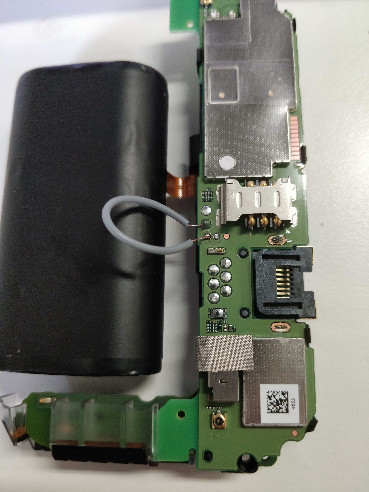
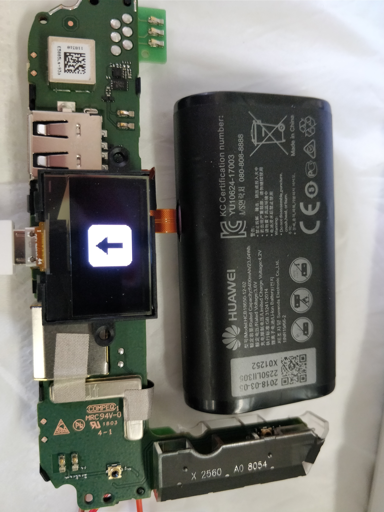
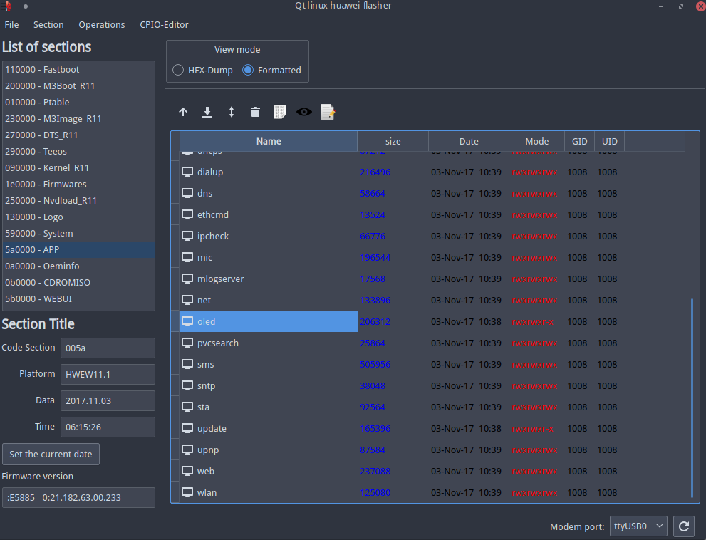
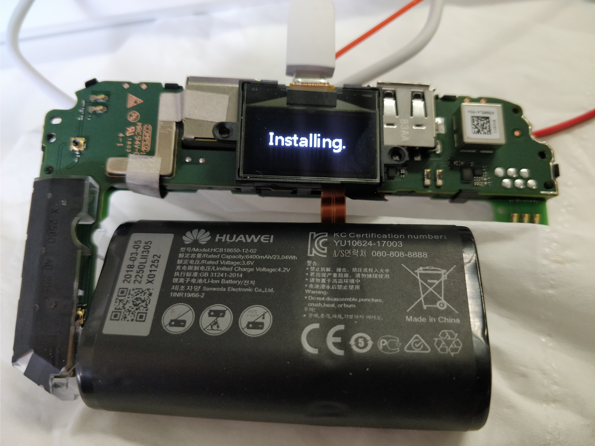
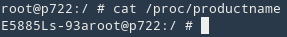
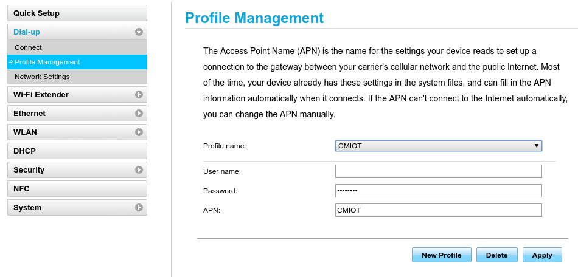
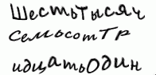
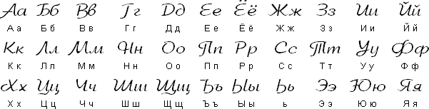

平时出差会用上4G网卡，这款4G路由器太好用了，支持LTE,UMTS,GSM，可以作为充电宝、路由器、上网卡，支持无线有线。通过破解可以自定义IMEI，绕过ICCID与IMEI绑定限制，逃避网络审查。
拿到手之后第一件事就是拆开，找UART口，可以打印出log，但是发现被密码保护了，长度8位，没办法通过读取NVram的方式解开密码。
1 2 3 4 5 6 7 8 9 10 11 12 13 14 15 16 17 18 19 20 21 22 23 24 25 26 27 28 29 30 31 32 33 34 35 36 37 38 39 40 41 þ onchip SEB_SecureInit OK, lcs = 7 SOC_ID: 0x00000000, 0x00000000, 0x00000000, 0x00000000, 0x00000000, 0x00000000, 0x00000000, 0x00000000, NF id boot! NF ID 0x98AA9015 0x76160800 NF pagesz 0x00000800B,pagenm 0x00000040,oobsz 0x00000058B,ecc 0x00000008,addrnum 0x00000005,chipsz 0x00000100MB nand spec save to 0x74650131 len 0x00004888 SEB_XloaderVerification ok. mddrc init ok code_base = 0x00000055 code_tsensor = 0x0000005A code_base_high = 0x00000000 code_tsensor_high = 0x00000000 trim_a = 0x00000400 trim_b = 0xFFFFFB00 123 boot fastboot from fastboot SEB_XloaderVerification ok. CHG:read NV success,mode=1 [00000422ms] CHG:read NV success,mode=1 [0000042Ems] CHG:exception_poweroff_poweron_enable=0 [00000430ms] CHG:no_battery_powerup_enable=0 [00000434ms] CHG:chg_boot_chip_init [00000437ms] CHARGE INIT SUCCESS! [0000043Dms]hkadc_bbp_convert read battery id voltage return volt=726 [00000440ms][zcw_test]:boot_bq27510 read temp val_low = 0000009b; val_high = 0000000b! [00000448ms][zcw_test]:boot_bq27510 read temp batt_temp = 00000b9b! [0000044Ems][zcw_test]:boot_bq27510 read temp val_low = 0000009b; val_high = 0000000b! [00000456ms][zcw_test]:boot_bq27510 read temp batt_temp = 00000b9b! [0000045Cms][zcw_test]:boot_bq27510 read volt val_low = 00000044; val_high = 0000000f! [00000463ms][zcw_test]:boot_bq27510 read volt batt_volt = 00000f44! [00000469ms]PRE-CHG: trickle charg batt only batt_voltage=3908 [0000046Fms] [zcw_test]:boot_bq27510 read volt val_low = 00000044; val_high = 0000000f! [00000477ms][zcw_test]:boot_bq27510 read volt batt_volt = 00000f44! [0000047Dms]EXTCHG:ext-charge limit to 2A in boot!! [00000579ms]Hello Welcom to input password Password:
ValdikSS破解了E5885L，在4PDA上面编写了破解教程，传送门：
4PDA - Huawei E5885 (WiFi Pro 2 / WiFi 2 Pro) - discussion
实际上破解的原理是得到了固件的结构布局，结构布局有很多种方式获取：逆向PC端升级过程，从其他相似型号获得特征，直接提取编程器固件（成本太高）。Balong系列比较通用，一款设备的固件布局结构也可以用在其他设备上。通过修改了官方升级包，将带有telnet和adb调试功能的固件刷回去，
将这个测试点(boot pin)和GND短接，插上USB线并连到电脑，就可以进入下载模式。因为暂时没有镊子了，测试点太小手不够，只能直接飞线。

使用forth32编写的balong-usbdload ，编译并刷入usbload。原理是通过串口向USB设备写数据。
1 2 3 4 5 6 7 8 9 10 11 12 13 14 15 ./balong-usbdload -h Утилита предназначена для аварийной USB-загрузки устройств на чипете Balong V7 ./balong-usbdload [ключи] <имя файла для загрузки> Допустимы следующие ключи: -p <tty> - 设备名 (默认 /dev/ttyUSB0) -f - 仅将usbloader加载到fastboot（不运行Linux） -b - 擦除时不检查错误 -t <file>- 从指定文件中读取分区表 -m - 显示引导加载程序分区表并完成工作 -s n - 设置分区n的文件标志（可以多次指定密钥） -c - 不要自动修补分区擦除
进入下载模式

刷写usbloader，Win下需要安装驱动，驱动等下载地址放在文章结尾。
1 sudo balong_usbdload usbloader-e5885.bin
下载balongflash ，刷写ValdikSS的修改版固件
forth32还编写了一个GUI的固件自定义工具qhuaweiflash ，俄罗斯人的技术实力很强。

1 2 3 4 5 6 7 8 9 10 11 12 13 14 15 16 17 18 19 20 $ ./balong_flash -h Утилита предназначена для прошивки модемов на чипсете Balong V7 ./balong_flash [ключи] <имя файла для загрузки или имя каталога с файлами> Допустимы следующие ключи: -p <tty> - 设备名 (默认 /dev/ttyUSB0) -n - 指定目录中的多文件固件模式 -g -gl - 参数说明 -gd - 禁止自动检测签名 -m - 显示固件文件并退出 -e - 将固件文件反汇编成不带标题的部分 -s - 将固件文件反汇编成带标题的部分 -k - 请勿在固件刷写结束时重新启动基带 -r - 强制重新启动基带而不刷写分区 -f - 就算CRC错误也强制刷写 -d
1 sudo balong_flash E5885Ls-93a_Update_21.236.05.00.00_mod1.2.bin

刷完usbloader之后，可以使用balong_flash刷写任意固件。
1 2 3 mount /dev/block/mmcblk0p1 /sdcard cd /sdcardfor i in 3 4 5 6 7 23; do cat mtdblock$i > /dev/block/mtdblock$i ; done
然后可以通过adb和telnet得到shell,默认帐号密码是 root/changemerightnow

ValdikSS编写了修改OLED显示菜单的工具，原理是修改原先oled程序的链接库，劫持sprintf设置自定义菜单，劫持register_notify_handler处理按钮事件，重定向到指定脚本。我们可以在其基础之上添加自定义功能。
项目地址：https://github.com/ValdikSS/huawei_oled_hijack
首先参考我之前写的eSIM学习笔记 ，里面有提到eSIM飞线的攻击方式。
在飞线之前，先查看原本的IMEI
1 2 3 E5885Ls-93aroot@p722:/ /system/bin/imei [VALUE] Current IMEI: 358731070934433
ValdikSS版固件每次开机都会更换IMEI，也可手动修改为指定IMEI，可以用现成工具修改为目标设备IMEI，重启后生效。切换网络，切换模式等功能也是通过AT命令执行。
1 2 3 imei 864758031772807 or echo -e "AT^CIMEI=864758031772807" > /dev/appvcom
最后在Web配置菜单填上APN配置参数

备份是一个好习惯，首先插入microSD卡，然后挂载分区，将nandflash中的分区保存到SD卡
1 2 3 4 5 6 7 8 9 10 11 12 13 14 15 16 17 18 19 20 21 22 /system/busybox sh mount /dev/block/mmcblk0p1 /sdcard cd /sdcardmkdir mtdblocks cd mtdblocksfor i in `seq 0 27`; do cat /dev/block/mtdblock$i > mtdblock$i ; done cd ..mkdir nanddump cd nanddumpfor i in `seq 0 27`; do nanddump -f mtd$i /dev/mtd/mtd$i ; done for i in `seq 0 27`; do nanddump -o -f mtdoob$i /dev/mtd/mtd$i ; done cd ..tar cf files.tar /system /app /data /root /modem_log /modem_fw /online /mnvm2:0 cat /proc/mtd > procmtd cat /proc/kallsyms > kallsyms mount > mount cd /umount /sdcard
要下载文件，必须注册4PDA论坛，而验证码就把我给拦住了，于是学了一下俄语数字。4PDA的验证码中，м和т一定概率互换，如下图验证码，是六千七百三十一

其实很简单，对照下面整理的字母表和数字单词就行了。

1 2 3 4 5 6 7 8 9 10 11 12 13 14 15 16 17 18 19 20 21 22 23 24 25 26 27 28 29 30 31 32 33 34 35 36 37 38 39 40 41 42 43 44 45 46 47 48 49 一 Один ("a-deen") 二 два ("dva") 三 три ("tree") 四 четыре ("chye-tir-ye") 五 пять ("pyat") 六 шесть ("shest") 七 семь ("syem") 八 восемь ("vo-syem") 九 девять ("dyev-yat") 十 десять ("dyes-yat") 二十 Двадцать 三十 тридцать 四十 сорок 五十 пятьдесят 六十 шестьдесят 七十 семьдесят 八十 восемьдесят 九十 девяносто 十一 Одиннадцать 十二 двенадцать 十三 тринадцать 十四 четырнадцать 十五 пятнадцать 十六 шестнадцать 十七 семнадцать 十八 восемнадцать 十九 девятнадцать 一百 Сто 二百 двести 三百 триста 四百 четыреста 五百 пятьсот 六百 шестьсот 七百 семьсот 八百 восемьсот 九百 девятьсот 一千 Тысяча 两千 две тысячи 三千 три тысячи 四千 четыре тысячи 五千 пять тысяч 六千 шесть тысяч 七千 семь тысяч 八千 восемь тысяч 九千 девять тысяч
4PDA - Huawei E5885 (WiFi Pro 2 / WiFi 2 Pro) - discussion balongflash - Github balong-usbdload - Github qhuaweiflash - Github huawei_oled_hijack - Github 驱动和固件的下载地址 - https://mega.nz/#F!aoZkxAqR